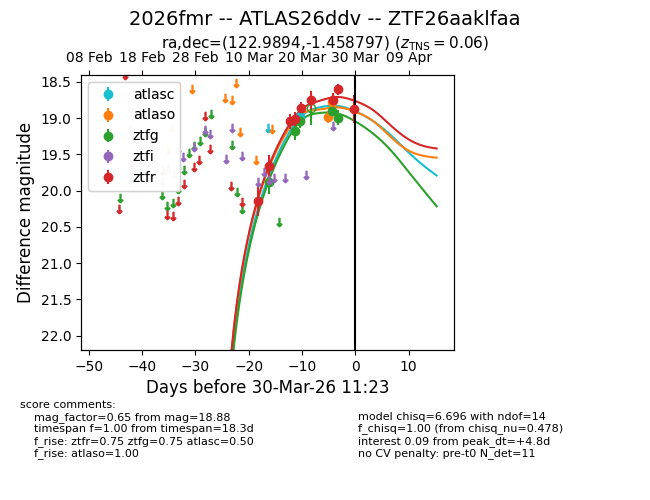
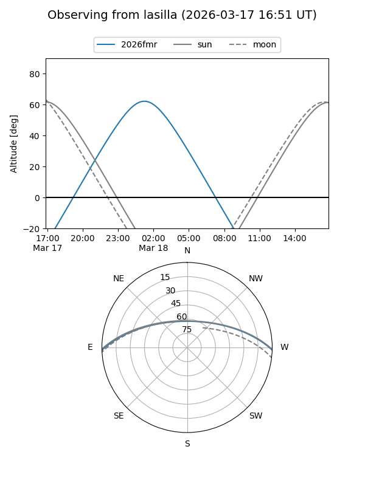
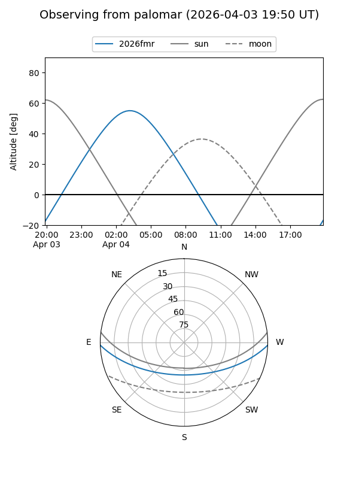
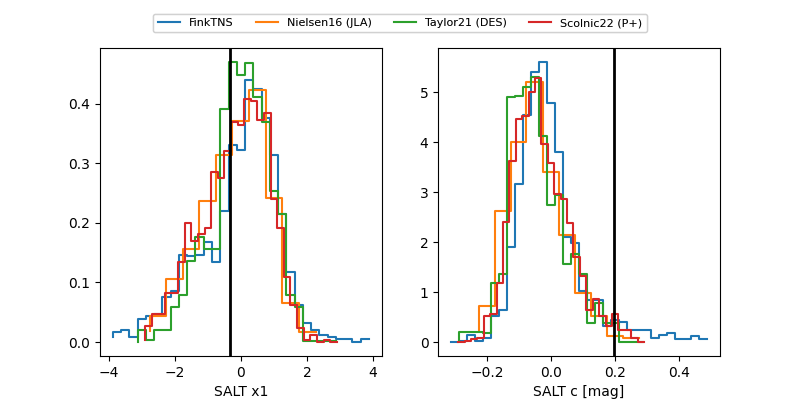

2026fmr
Target 2026fmr at 2026-03-30 11:26
Aliases and brokers:
FINK: link
Lasair: link
ALeRCE: link
TNS: link
YSE: link
alt names
ZTF26aaklfaa (ztf,fink_ztf)
2026fmr (tns,yse)
ATLAS26ddv (atlas)
Coordinates:
equatorial (ra, dec) = 122.9894,-1.45880
equatorial (HMS+DMS) = 08:11:57.45,-01:27:31.67
galactic (l, b) = (223.7604,+17.13244)
Flags:
confirmed ia
Photometry:
last atlasc=18.97, atlaso=18.78, ztfg=18.99, ztfr=18.88
1 atlasc, 2 atlaso, 5 ztfg, 9 ztfr detections
Lightcurve

Visibility


Additional plots
